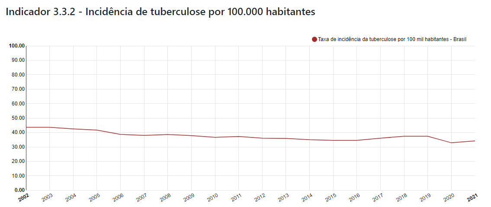

O.D.S.-3
Saúde e Bem Estar
Objetivo de Desenvolvimento Sustentável
3.3
Nações Unidas: Até 2030, acabar com as epidemias de AIDS, tuberculose, malária e doenças tropicais negligenciadas, e combater a hepatite, doenças transmitidas pela água, e outras doenças transmissíveis.
Brasil: Até 2030, acabar, como problema de saúde pública, com as epidemias de AIDS, tuberculose, malária, hepatites virais, doenças negligenciadas, doenças transmitidas pela água, arboviroses transmitidas pelo aedes aegypti e outras doenças transmissíveis.
Indicadores
3.3.1 - Número de novas infecções por HIV por 1 000 habitantes, por sexo, idade e populações específicas
3.3.2 - Incidência de tuberculose por 100.000 habitantes
3.3.3 - Taxa de incidência da malária
por 1 000 habitantes
3.3.4 - Taxa de incidência da hepatite B
por 100 mil habitantes
3.3.5 - Número de pessoas que necessitam de intervenções contra doenças tropicais negligenciadas (DTN)
